Pranav Bykampadi
D ML algorithm design · E ML training & evaluation
Designed the machine-learning approach and trained and evaluated the project models.
CMSC 320 — Spring 2026 — Final Tutorial
The CDC asks 400,000 Americans the same 22 questions every year. We trained three machine-learning models on the answers, asked whether a 30-second questionnaire could replace a blood test, and built a calculator so you can try it on yourself.
For each member, we list the rubric sections they led: A project idea, B dataset curation, C exploration & statistics, D ML algorithm design, E ML training & evaluation, F visualization & results, G tutorial writing.
D ML algorithm design · E ML training & evaluation
Designed the machine-learning approach and trained and evaluated the project models.
C exploration & statistics · F visualization & results
Led exploratory analysis, statistical summaries, visualizations, and result presentation.
G tutorial writing
Wrote and organized the final tutorial narrative.
A project idea · B dataset curation
Defined the project idea and curated the BRFSS dataset for analysis.
Roughly one in ten Americans have diabetes, and another one in three is pre-diabetic. Most don't know it. The standard screen, a fasting blood-glucose or HbA1c draw is cheap by hospital standards but still requires a clinic, a phlebotomist, and a follow-up appointment that an uninsured patient may never make.
The federal Behavioral Risk Factor Surveillance System (BRFSS) takes the opposite approach. Every year the CDC calls 400,000+ adults and asks the same 22 questions: "How tall are you?", "Do you smoke"?, "Did you eat fruit yesterday?", "Can you walk a flight of stairs without help?". The data is free, the questions take no more than ninety seconds, and they cost nothing to administer. You might wonder, do the patients answers hold enough weight to warrant a clinical visit?
Can we predict diabetes risk from cheap survey data alone, well enough to triage who should go get a real blood test?
In this article, we will answer this question by following a data science pipeline: we will first aquire the survey, analyze it using summary statistics and three formal hypothesis tests, train three different classification algorithms and compare them, and lastly, we will use the best algorithm to create an in-browser calculator that you can use at the bottom of the article to test to see how at-risk you are for having diabetes.
The dataset is diabetes_binary_health_indicators_BRFSS2015.csv, a cleaned subset of
the 2015 BRFSS survey released by Alex Teboul on
Kaggle
(original source: CDC BRFSS 2015 codebook).
Each row is one respondent. The target column,
Diabetes_binary, equals 1 if the respondent has been told by a health
professional that they have diabetes (or, in some recodes, pre-diabetes) and 0 otherwise.
The remaining 21 columns are mostly binary indicators (high blood pressure, smoker, physical
activity), a handful of ordinal scales (general health, age band, income, education), and one
continuous feature, BMI.
Data pre-processing was simple since the file was already nicely cleaned and structured:
pd.to_numeric(errors="coerce"); drop the (zero) rows that fail.int, every variable is coded numerically by design.AgeGroup, that buckets the 13-level Age ordinal into Young / Middle / Older for the ANOVA below.After cleaning, the working frame is 253,680 rows × 22 columns: zero missing values, fully numeric, and ready for analysis.
import pandas as pd
df = pd.read_csv("diabetes_binary_health_indicators_BRFSS2015.csv")
df.columns = df.columns.str.strip()
for col in df.columns:
df[col] = pd.to_numeric(df[col], errors="coerce")
df = df.dropna()
for col in df.columns:
df[col] = df[col].astype(int)
def age_bucket(code):
if code <= 4: return "Young (18-39)"
if code <= 9: return "Middle (40-64)"
return "Older (65+)"
df["AgeGroup"] = df["Age"].apply(age_bucket)
df.shape # (253680, 22) before AgeGroup, (253680, 23) afterBefore fitting any model, we want a feel for the data: how lopsided is the target, which features seem to move with diabetes, and are the differences we see big enough to be real or could they be noise? Three formal hypothesis tests answer the third question.
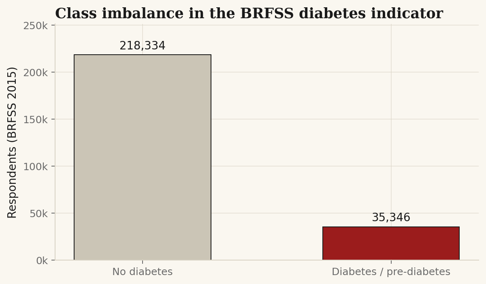
A quick Pearson correlation against the target gives a first-pass ranking. None of the individual correlations are large in absolute terms, which is expected for a 21-feature health survey, where most signal lives in interactions, but the directions are simple: high blood pressure, high cholesterol, BMI, age, and self-rated general health are the most strongly associated with diabetes; physical activity, education, and income point the other way.
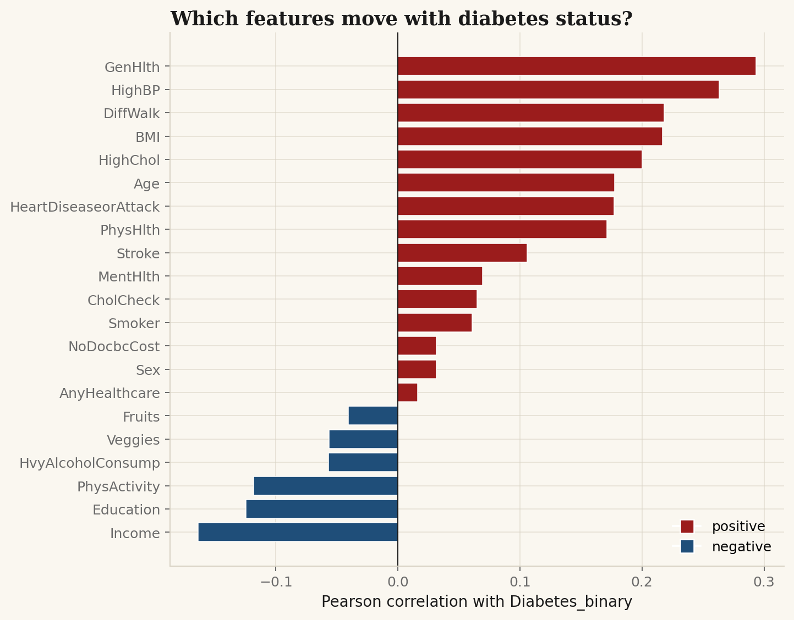
Diabetes_binary.
Red bars run with diabetes; blue bars run against it. Self-rated general health
is the single strongest signal — a 90-cent question that appears to do real work.
We test whether the mean BMI among diabetics is higher than among non-diabetics. The classical tool here is Welch's t-test, which doesn't require equal variances, run as a one-sided test because the directional prediction (higher BMI for diabetics) is the medically meaningful one.
Sample means: 27.8 in the no-diabetes group versus 31.9 in the diabetes group. The Welch t-statistic is 99.9, with a one-tailed p-value indistinguishable from zero (well below any sensible α). We can definitively reject H0: BMI is materially higher among diabetics.
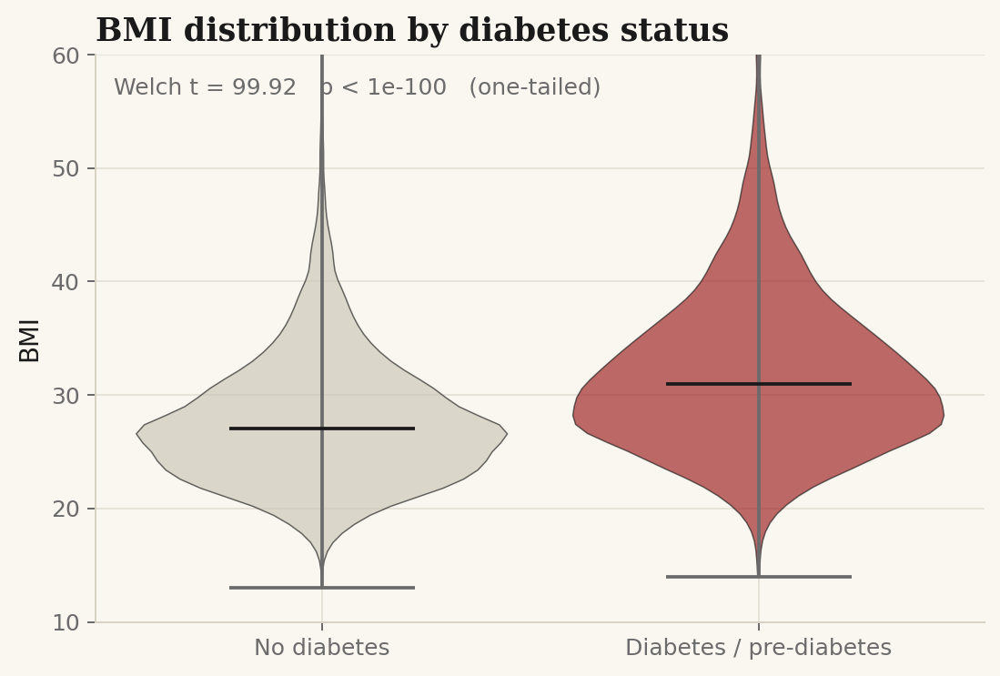
A two-sided Welch t-test on the diabetes indicator, grouped by sex.
Female prevalence is 13.0%; male prevalence is 15.2%. t = 15.7, p ≈ 1.3 × 10-55. We reject H0: the difference may appear small (about 2 percentage points) but the sample is so large that the uncertainty bands are tight. This is a statistically meaningful gap.
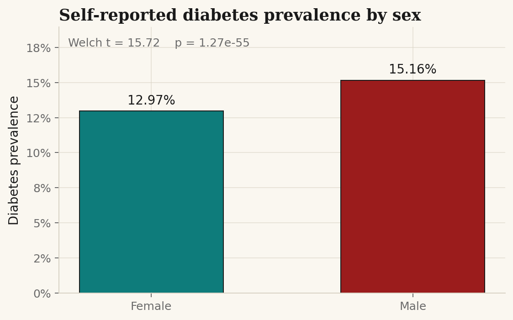
A one-way ANOVA across our three different age buckets.
The middle-aged group (40–64) has the highest mean BMI at 28.9; both the younger and older groups sit near 27.9. F = 762.8, p ≈ 0. We reject H0, however the picture is more interesting than a monotone trend would predict. Average BMI rises through middle age and then falls again in the 65+ bucket, a well-documented pattern that combines survivorship bias (heavier adults die younger) with muscle-mass loss in older age.
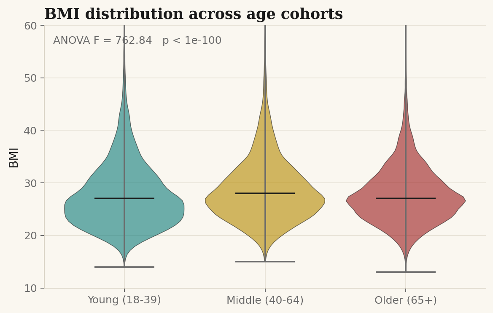
The exploration leaves us with a binary classification problem on a heavily imbalanced target. Three things drive the modeling choices:
We compare three models with progressively more flexibility:
class_weight="balanced". The
interpretable baseline. Coefficients on standardized features tell us the direction and
strength of each signal.
HistGradientBoostingClassifier doesn't take
class_weight directly.
Eighty-twenty stratified train/test split, fixed seed (42). Linear model trains on standardized features (mean 0, variance 1); the tree models train on the raw values.
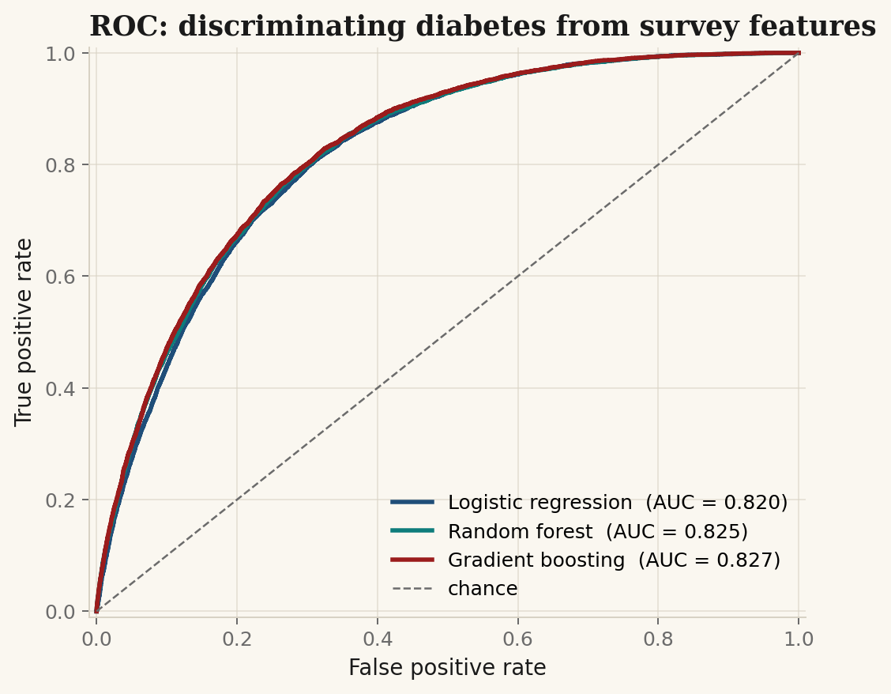
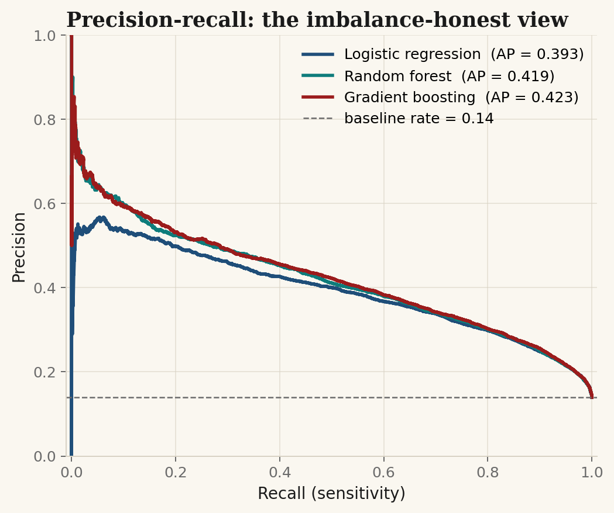
| Model | ROC-AUC | PR-AUC | Sens.@0.5 | Spec.@0.5 |
|---|---|---|---|---|
| Logistic regression | 0.820 | 0.393 | — | — |
| Random forest | 0.825 | 0.419 | — | — |
| Gradient boosting | 0.827 | 0.422 | 0.795 | 0.706 |
The three models converge at roughly the same ROC-AUC ceiling — a clue that the survey, not the algorithm, is the binding constraint. Gradient boosting wins by a hair; we use it below for the confusion matrix and calibration.
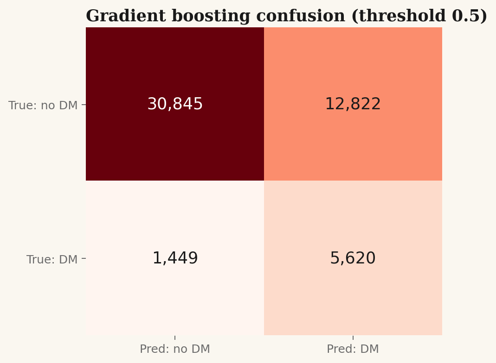
The choice of decision threshold is where machine learning meets clinical priorities. A screening tool wants to err toward false positives (you miss fewer diabetics, at the cost of more “please come in for a real test” nudges); a self-diagnostic widget might prefer the opposite. The sweep below shows the trade-off explicitly.
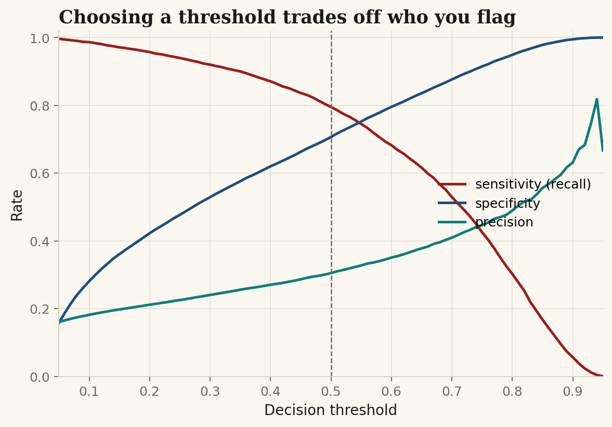
A score from a classifier is only as good as its meaning. If the model says “this person's diabetes probability is 0.30,” we'd like 30 out of every 100 such people to actually have diabetes. The reliability diagram below quantifies that.
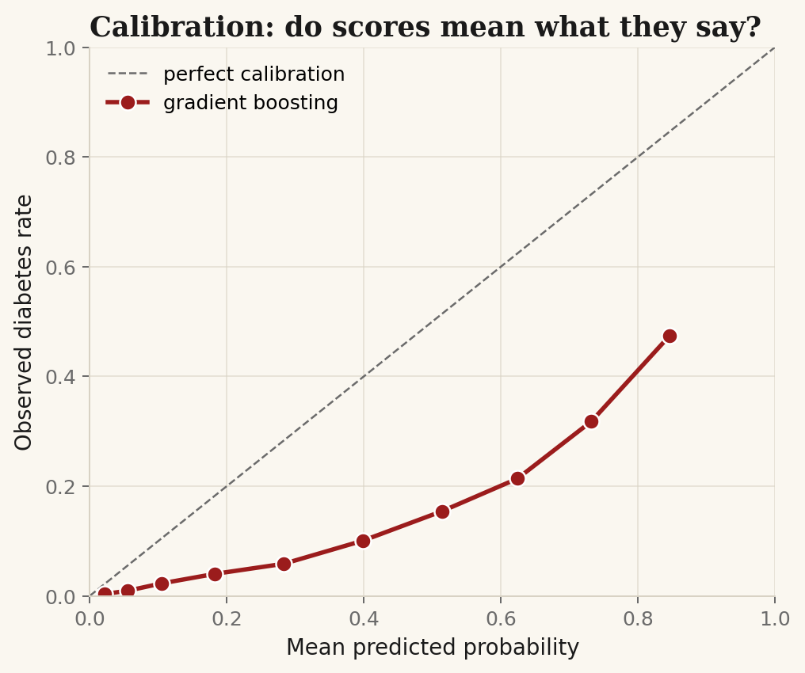
Two views of feature importance. The random forest's importances measure how much each feature reduces impurity across the ensemble; non-negative, scale-free, but direction-blind. The standardized logistic-regression coefficients tell us the direction (positive coefficients increase diabetes log-odds) and the relative strength on a common scale.
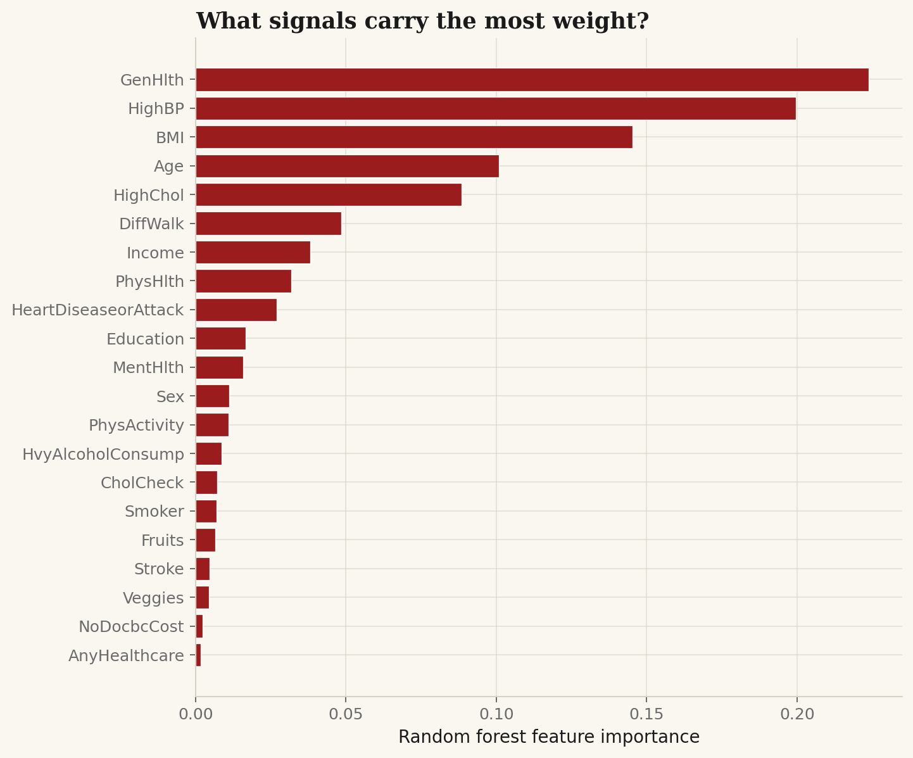
BMI
and self-rated GenHlth dominate, followed by Age and
HighBP. The questions a doctor would ask first are the same ones the model
finds most useful.
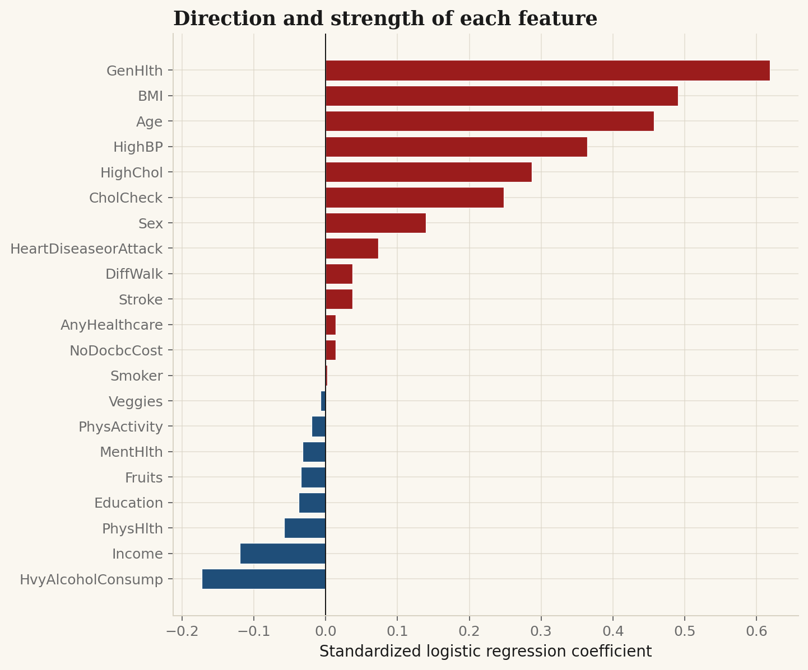
HighBP, GenHlth
(poorer self-rating ⇒ higher risk), and HighChol are the strongest positive
signals; Income and HvyAlcoholConsump are the most protective.
The latter one of the more counter-intuitive findings, almost certainly caused by how the
survey codes “heavy drinking” in a population skewed toward older respondents.
The widget below runs our trained logistic-regression model directly in your browser. No data leaves this page. Move the sliders and toggles to match your own answers, and the model's predicted probability of diabetes updates live.
This is a class project, not medical advice. The model was trained on a 2015 survey of US adults, calibration is imperfect at the high end (Figure 10), and a questionnaire cannot replace a blood test. If the gauge sits in the orange or red, that means “maybe go ask a real doctor,” not “you have diabetes.”
Three things are worth taking away from this exercise.
A 90-second self-report can hit ROC-AUC = 0.83 and catch four out of five diabetics at a threshold tuned for sensitivity. That is not good enough to diagnose anyone, as false positives are much more frequent than true positives at almost every operating point, but it is plenty good enough to triage. To flag the people who should go get a real blood test, ahead of the people who probably don't need one. For a public-health screening program looking to spend its outreach budget where it will make the biggest impact, it is a strong signal.
All three models; a linear baseline, a random forest, and a gradient-boosted ensemble converged within 0.01 of each other on ROC-AUC. That is a sign of a feature ceiling. Adding more sophisticated learners is not what would improve the algorithms. Instead, adding better questions is. The most informative existing features are the ones a primary-care doctor would ask first: BMI, self-rated health, age, blood pressure, cholesterol. The features the doctor would not bother asking, such as fruit consumption, daily veggie intake, and sex had little impact.
The data are self-reported, cross-sectional, and from 2015. We learn what BRFSS respondents say about themselves on a phone call, not what shows up on a glucose tolerance test. Heavy alcohol consumption pulled a protective coefficient, and not because drinking prevents diabetes, but because it correlates with younger and healthier respondents in this sample. A more careful study would erase that using stratification or causal modeling.
The reader who came in with no prior background knowledge should leave with an understanding for the data-science pipeline: hypothesis tests, model comparison, threshold trade-offs, calibration, and an idea of what a 13.9%-prevalence binary classifier can and cannot tell them. The reader who came in knowing the BRFSS dataset should leave with one new specific number: 0.827 ROC-AUC is attainable from the questionnaire alone, and the binding constraint isn't the model.
Reproduce this analysis:
clone the repo,
download the
CSV
into the project root, and run python3 analysis.py. The notebook
(rendered HTML,
raw .ipynb,
Colab)
walks through the same code cell-by-cell.